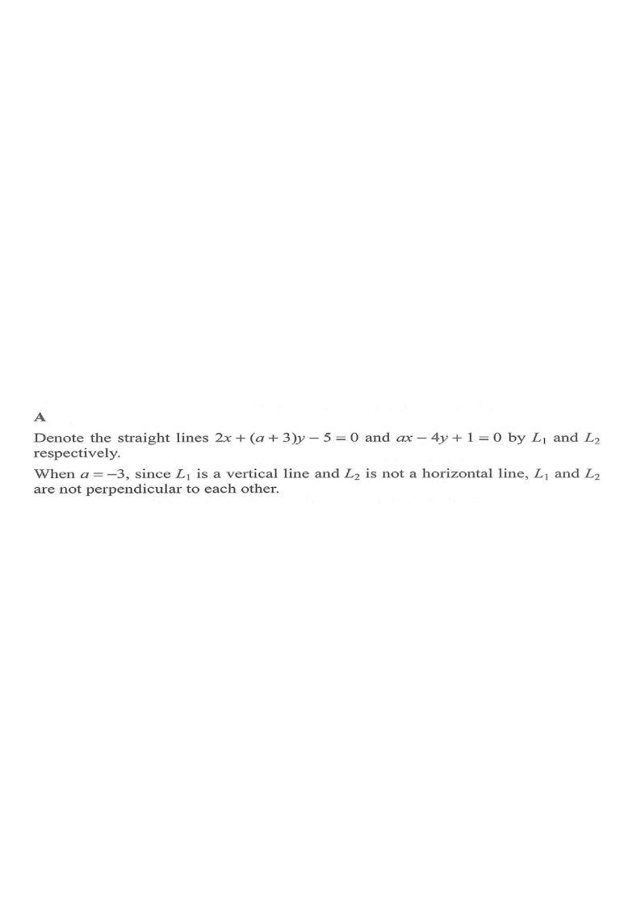

DSE 2023 · 卷二 · Q25
兩直線互相垂直
坐標幾何 · 直線方程 · 選擇題
題目
求常數 $a$，使直線 $2x+(a+3)y-5=0$ 與 $ax-4y+1=0$ 互相垂直。
A.
$-6$
B.
$-5$
C.
$-2$
D.
$4$
題解
x
y
斜率相乘 = −1
a = −6
圖：$2x+(a+3)y-5=0$ 與 $ax-4y+1=0$ 垂直 ⟹ $a=-6$（題解繪）

圖：題解附圖（原試卷）
第 1 步
求兩直線的斜率
$L_1$：$(a+3)y=-2x+5$，故 $m_1=-\dfrac{2}{a+3}$（$a\neq-3$）。\[ L_2:\ 4y=ax+1\Rightarrow m_2=\frac{a}{4} \]
第 2 步
垂直條件
互相垂直
\(m_1m_2=-1\)
兩條非鉛垂、非水平直線垂直時，斜率之積為 $-1$。
\[ \left(-\frac{2}{a+3}\right)\left(\frac{a}{4}\right)=-1 \]
第 3 步
解方程
\[ \frac{2a}{4(a+3)}=1\Rightarrow 2a=4a+12\Rightarrow a=-6 \]
第 4 步
驗算
$a=-6$ 時 $m_1=\dfrac{-2}{-3}=\dfrac23$、$m_2=\dfrac{-6}{4}=-\dfrac32$，乘積 $-1$ ✓。
答案
A
（$a=-6$）
練習
同類新題
題目.
若直線 $3x+ky-1=0$ 與 $2x-4y+7=0$ 互相垂直，求 $k$。
顯示題解
第 1 步.
$m_1=-\dfrac{3}{k}$，$m_2=\dfrac12$
第 2 步.
$\left(-\dfrac3k\right)\left(\dfrac12\right)=-1$
答案：$k=\dfrac32$
‹ 上一題
目錄
下一題 ›